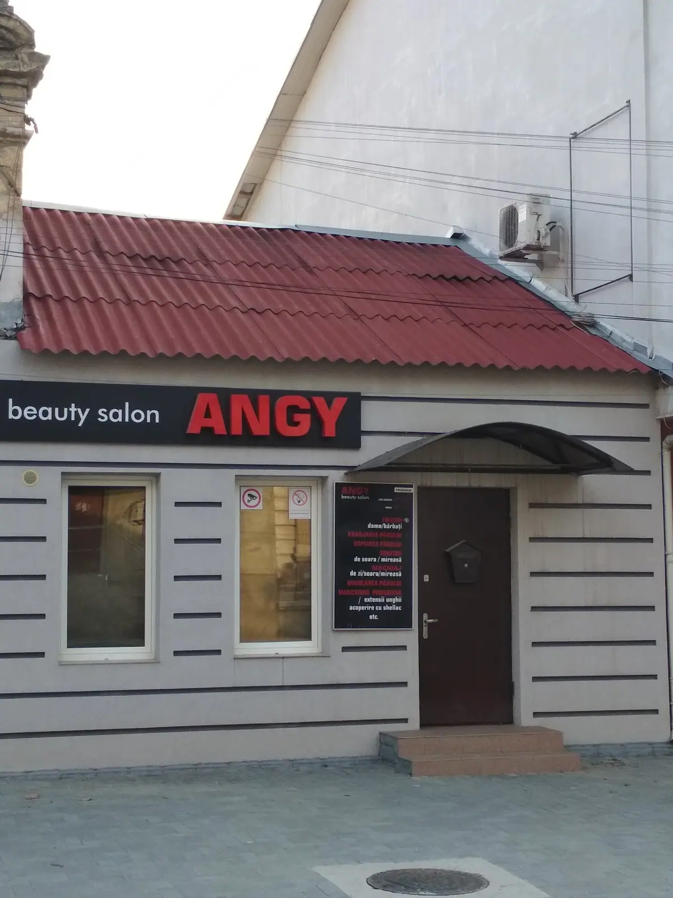
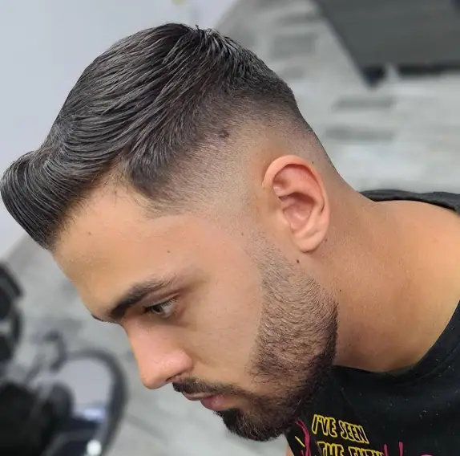
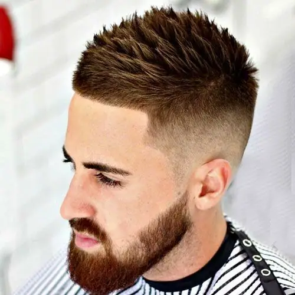
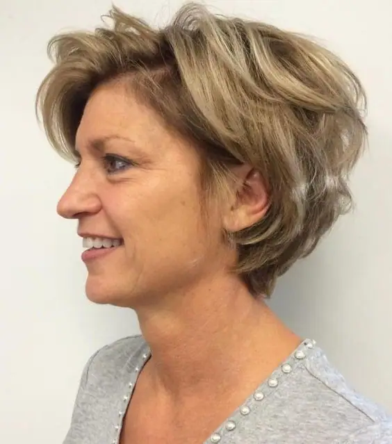
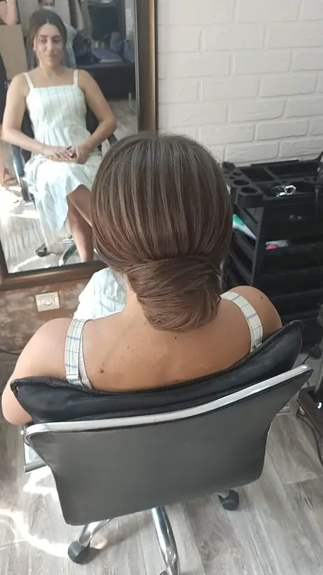
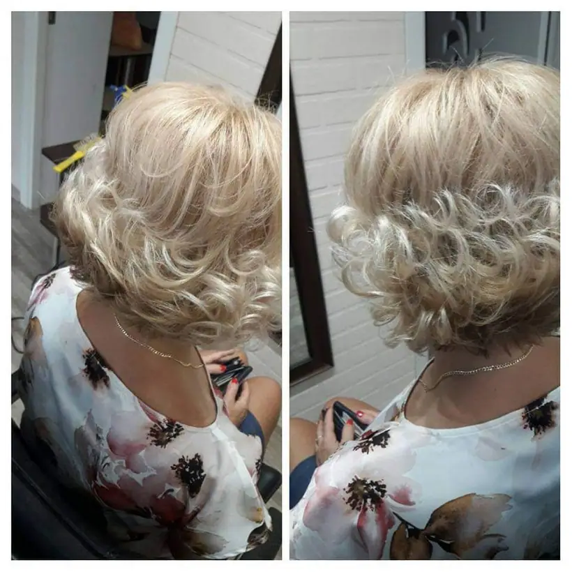
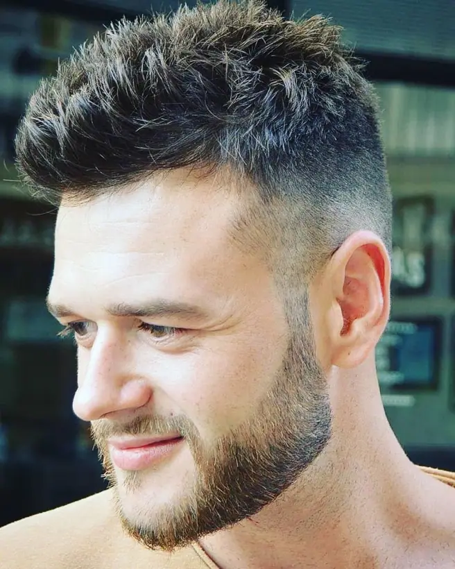
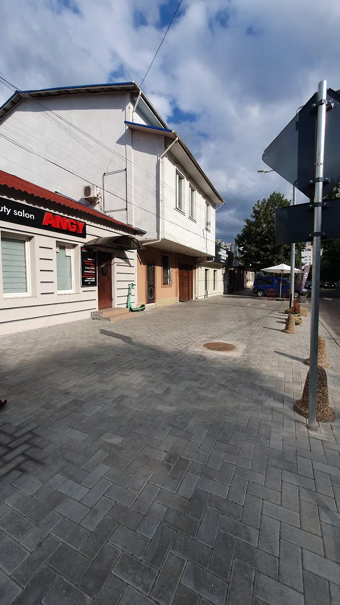

Tunsori pentru femei, bărbați și copii, culoare și coafuri
Pot veni fără programare?
Da. Se primește în ordinea venirii, de luni până sâmbătă.
Și dacă vreau la o oră anume?
Alege ora: completăm formularul de programare, iar salonul confirmă pe WhatsApp.

Ce culoare îmi iese?
Ziarul tipărește alb-negru. Alege o nuanță și fotografia se developează în culoarea ei reală: sunt lucrări ale salonului.
Prețuri orientative, „de la”, pentru prezentare.
Cine tunde?
În recenzii e Angela sau Angelika. Tunde bărbați, femei și copii; despre salon clienții scriu: liniște, curat, atmosferă plăcută.
„Зашёл без записи, подождал 2 минуткии и меня Анжела великолепно постригла.”D P
„Angelika, cea mai bună frizeriță din lume!”Family Time
„Am întrebat pentru o tunsoare WolfCut și s-o primit așa cum am vrut …”Perles Jumelles
„… Могут подобрать любую прическу.Ставлю 10/10.Цены комфортные.”Николай Тихонов





Ce se mai întreabă?
Tundeți și copii?
Da, și copii, și adulți, se poate în aceeași vizită. O mamă a scris că a fost foarte repede și bine făcut.
Pot cere o tunsoare anume, de exemplu WolfCut?
Da. Aduceți o poză sau spuneți ce vreți; maestra potrivește forma după părul dumneavoastră. Programați o oră dacă e o schimbare mare.
Cât aștept dacă vin fără programare?
Depinde de zi. Ca să nu așteptați deloc, alegeți o oră mai sus; un client a scris că a intrat fără programare și a așteptat două minute.

Cât costă?
Clienții numesc prețurile comode. Mai jos, prețuri orientative „de la”; salonul își confirmă prețurile.
Tunsori
| Damă | Formă, spălat, aranjat | de la200 lei |
| Bărbați | Mașină și foarfecă, fade | de la150 lei |
| Copii | Repede și liniștit | de la100 lei |
| WolfCut | Formă în trepte | de la250 lei |
Culoare și coafat
| Vopsit | Într-o nuanță | de la500 lei |
| Culoare complexă | Cenușiu, argintiu, șuvițe | de la900 lei |
| Bucle | Pe orice lungime | de la250 lei |
| Coafură | Coc, păr prins | de la350 lei |
Unde e?
Strada Tighina 52, Chișinău
Casa cu un nivel, acoperiș roșu și firma Angy.
Vă programez?
Alegeți serviciul, ziua și ora. Mesajul pleacă pe WhatsApp, salonul confirmă.
